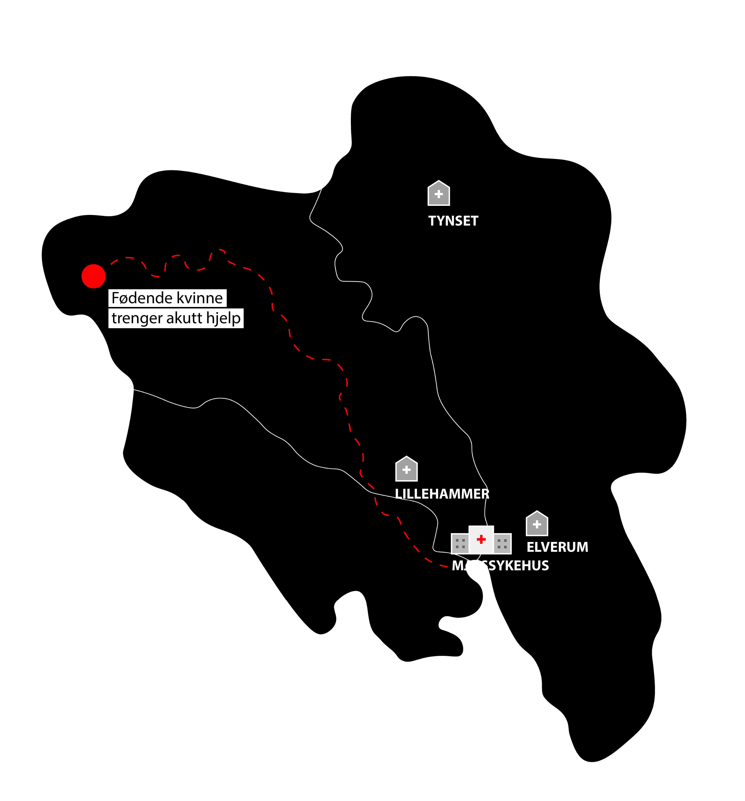

Se for deg at du plutselig kjenner en sterk smerte i
brystet.
Smerten begynner å stråle nedover armen.
Du er bekymret.
Vet du hvor langt unna hjelpen er når sekundene teller?
SENTRALISERING
« Jeg satt bak i ambulansen med pasienten, og jeg sa til Paulina; "hva driver du
med?" Hun
bare;
"bilen
gir
ikke gass lenger". Jeg tror faktisk vi hadde mistanke om hjerneslag.. »
FOTO: privat
TONJE (24) har jobbet i ambulansen i 4.5 år. Arbeidsdagen hennes er preget av kappløp
mot tiden. Når
avstandene mellom sykehusene blir større, og ambulanse-stasjoner slåes sammen, blir risikoen stor for at
utrykningen blir lang når AMK (Akuttmedisinsk kommunikasjonssentral) slår alarm.
« .. Bare fem minutter kan ha avgjørende betydning for den pasienten hvis det var
hjerneslag.
Det
kan
jo faktisk være forskjellen på videre livskvalitet og ikke..»
På jobb dekker hun et stort område som inkluderer Drøbak, Nesodden, Ås, Vestby og Vinterbro. Dette
store
ansvarsområdet gjør at ambulansearbeidere ofte må kjøre lange avstander, som kan føre til forsinkelser i
behandlingen.
«Fem biler er på hele området sør, altså Prinsdal/Holmlia, Ski og Ås. Fem biler på de tre stasjonene
totalt. Det er ikke greit, egentlig skal det være ti. Får vi en tur til Nesodden så er vi fort borte
fra
stasjonen i tre timer.»
Å stå i tøffe dilemmaer er en del av arbeidshverdagen til en ambulansearbeider, og disse dilemmaene kan
ofte knyttes til de store avstandene de har å forholde seg til.
Lange kjøreavstander fra
A til B,
eller
fra stasjon til pasient, betyr lenger ventetid. Og for noen pasienter teller hvert minutt.
« Vi hadde et sånt dilemma på Tofte faktisk.. »
> 17:00 AMK-sentral:
"Akutt - Pasient med sepsis i Tofte."
Ambulansen som har ansvar for Tofte-området er opptatt på oppdrag i Drammen og kan ikke rykke ut til
pasienten.
Det må derfor sendes neste nærmeste ambulanse til pasienten. Ambulansen til Tonje og hennes makker er
nærmest og de
befinner seg på Ås. På grunn av distansen tar deres utrykning 50
minutter.
> 17:57 AMK-sentral:
Akutt - Pasient med hjertestans i Tofte.
« Så da sto vi der og tenkte:
"Hva gjør vi nå?"
Vi hadde hentet en veldig syk 60 år gammel dame med
sepsis, og noen få minutter etterpå får vi en melding om en
hjertestans
på en 80-åring som er to minutter unna oss.
Nærmeste bil etter oss kjører fra Ås-området, 50 minutter unna..
.. og vi hadde heller ingen antibiotika i bilen, så vi fikk
ikke startet behandling på sepsis-pasient »
Ambulanse nummer to rykkes ut mot Tofte. Tonje og makkeren velger å ta med sepsis-pasienten i sin
ambulanse og
kjøre til hjertestans-pasienten for å starte
livreddende arbeid.
Den andre ambulansen ankommer til slutt Tofte og tar over for Tonje og makkeren.
Den sepsis-syke pasienten er ikke glemt, og kan endelig
bli kjørt til nærmeste behandlingssted.
TONJE OPPLEVER også ofte at ambulansebilene ikke holder god nok standard når det
virkelig gjelder. I
tillegg er bilene ofte på verkstedet eller satt ut av drift av økonomiske årsaker.
«Vi har jo spart penger på det også. Vi har fått de billigste motorene, så vi kommer jo oss ikke opp
bakkene. Det har kommet nye EU-krav, som betyr at det er ikke lov å ha for sterke motorer på
ambulansene
lenger. Da har våre ambulanser fått den billigste motoren.»
«Hvis vi kjører opp bakker på utrykning så blir vi frakjørt av andre biler på E6. Og det er
flaut.»
«La oss si at to sykehus slås sammen da, og si at det er to hjerteavdelinger. På det ene
sykehuset så er det 20 rom, og på det andre 15 rom. Det blir ikke 35 rom på det nye. Det er kanskje
27.»
FOTO: privat
HANNE er en sykepleier som har jobbet i helsevesenet i mange år. Hun har erfart
både de positive og negative sidene ved sentralisering av helsetjenester. Gjennom arbeidet sitt har hun
opplevd hvordan store avstander og dårlig kommunikasjon kan påvirke pasientbehandlingen dramatisk. Hanne
tror at sentraliseringen vil påvirke skadeomfanget på pasientene.
“De burde bygget de store sykehusene mye større”
«Jeg tar jo mot, når det er traume for eksempel, når det er store trafikkulykker. Nå har jo ikke vi
slått sammen sykehusene enda, men det vil jo ta lengre tid før pasienten kommer til meg. Så ofte har
de blødd mye mer, og de har blitt mye mer ustabile. Det kan være vanskeligere å reversere
skadene.»
Hanne jobber nå på et mindre sykehus i Lillehammer, hvor alle kjenner hverandre. Hun opplever at det
skaper en trygghet fordi alle kjenner kompetansen og ferdighetene til teamet. På større sykehus er det
naturligvis ikke tid til å bli kjent med kollegaene på tvers av avdelinger, noe som kan gjøre
samarbeidet mer utfordrende når pasientene er svært syke.
SENTRALISERINGEN har også sine fordeler:
«All kompetanse er jo på et sted da. Så hvis du får inn
en
veldig kompleks pasient, så har du spesialister i alt.»
Men når man ser på transporttiden fra ulykkessted til sykehus, så kan det skape utfordringer. Det kan
fort økes fra en transporttid på 20-60 minutter, til 2-3 timer. Dette krever mye mer av
ambulansearbeiderne som sitter med pasienten alene.
«For eksempel skal Lillehammer bygge nytt sykehus. Da skal Hamar, Gjøvik og Lillehammer slå sammen og
ligge på Moelv. Som vil si en time lenger unna enn det den gjør nå. Og for veldig mange av
Lillehammer-pasientene som bor 3-4 timer unna sykehuset allerede, blir det plutselig 5 timer til
sykehuset.»

Dette kan ha stor innvirkning på fødende og akutt-syke pasienter. Mange vil kanskje nøle med å søke hjelp
på grunn av den lange reiseveien.
Hanne tror likevel ikke at sentraliseringen av sykehusene kommer til å ende med det første.
“Jeg tror dessverre at det er dårlig stelt for små sykehus. Jeg tror veldig mange mindre sykehus
kommer til å bli lagt ned og slått sammen, som gjør at det blir mye vanskeligere å samarbeide. Det
er ingen som er på jobb som kjenner hverandre, så man vet ikke hvem som er hvem, hvem som kan hva,
eller hvem som gjør hva.”
Det gjør fortsatt vondt i brystet.
Pulsen øker.
Du sjekker at du har telefonen i nærheten..
.. bare for sikkerhets skyld.
Men smerten blir raskt verre.
Du tar telefonen i hånden, åpner kontakter. Du tenker først på den som står deg nærmest,
men
innser
at dette haster.
«Sentralisering betyr jo at vi ofte må sende pasientene inn til
sentralsykehuset først.”
FOTO: privat
IDA (27)
har jobbet på hjerteavdelingen på sykehuset i Østfold, Kalnes, siden hun ble ferdig utdannet
sykepleier i 2020. Fagfeltet er komplekst og sykdomsbildet er bredt blant pasientene hun møter.
«Det er derfor svært viktig med gode rutiner og godt samarbeid med
sentralsykehuset.»
Når ambulansen har hentet en pasient, ofte med brystsmerter, blir det gjort en vurdering om pasienten
skal fraktes til Kalnes, som ofte er det nærmeste sykehuset, eller til Sentralsykehuset i Oslo.
«Vi har faste rutiner for den klassiske Nstemi og STEMI pasienten. Det er et strukturert forløp som
starter det øyeblikket pasienten ringer ambulansen med brystsmerter, hvor det da er flere ledd som
gjennomgås med kommunikasjon mellom ambulansen, Kalnes og deretter Oslo om det er behov for
det.»
Med Oslo, menes sykehusene på Ullevål og Rikshospitalet.
«For STEMI pasienten blir det en direkte tur med sirener. Mens for Nstemi pasienten vil det ofte bli
en mellomstasjon på Kalnes hvor de blir behandlet hos oss før en eventuelt elektiv angiografi.»
På Kalnes har de ikke et angiografi-laboratorium hvor det kan gjennomføres angiografi. Angiografi er en
røntgenundersøkelse av hjertet, der det blir brukt kontrastvæske for å undersøke blodårene som leder
blod inn til hjertetmuskelen.
FOR DE ALLER SYKESTE pasientene
betyr det at de først må direkte til Oslo for behandling, før de senere
overføres tilbake til lokalsykehuset på Kalnes. Det er også mye logistikk som må klaffe når pasienter
skal overføres. Særlig hjertesykdom er uforutsigbart, og da må man kunne kaste seg rundt for å møte
behovet til pasientene, enten det er snakk om bedring, eller “fallering” som det heter.
“Det kan noen ganger være snakk om over 5 pasienter som da skal ha sengeplass inn på en ofte
allerede
full avdeling - så her blir det igjen behov for en god del planlegging.”
Sengeplass på sykehuset Kalnes. FOTO: Jounalist i Daily Bugle
Selv om Ida opplever at sentraliseringen kan føre til utfordringer når det kommer til kommunikasjon
mellom enhetene i helsetjenesten, mener hun også at sentralisering har flere positive sider. Disse er
knyttet til kompetansen og kvaliteten på tilbudet.
“Det er jo naturlig at man blir eksperter på det man gjør mye av, noe som i stor grad gjelder
sentralsykehuset. Økt kompetanse gir definitivt et bedre tilbud.”
Lyden av ambulansen er ullen og fjern for deg
Du vet ikke hvorfor dette tok sånn tid, men nå er du i trygge hender